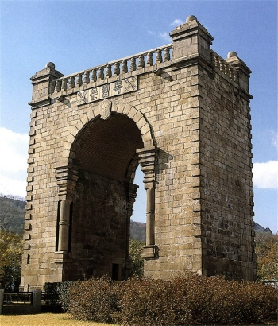
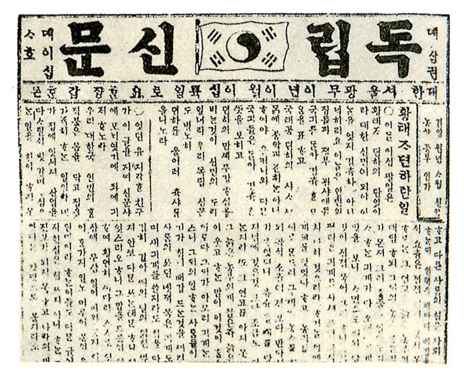
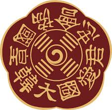
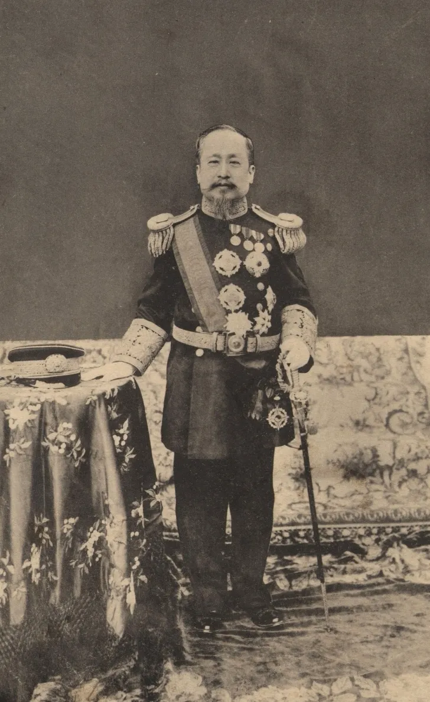
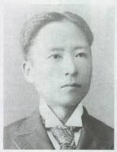
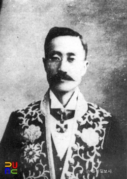
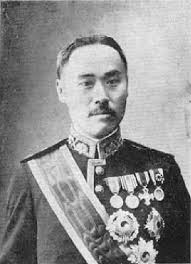

독립협회의 공식 목소리
1896년 11월 30일 창간된 독립협회 회보로, 근대 문명과 과학 지식을 소개하며 계몽적 성격을 보였습니다.
신문보다 더 ‘단체의 생각’을 정리해 보여주는 자료로 활용할 수 있습니다.
자료 포인트: 최초의 근대 잡지, 독립협회의 공식 의견, 계몽과 문명개화조선 말기와 대한제국의 선택 속으로
독립협회, 광무개혁, 황국협회, 그리고 서재필·윤치호·이완용의 행적을 통해 “역사를 왜 배우는가”라는 질문에 접근합니다.
첫 질문은 발표 전체의 출발점입니다. 학생들이 어떤 관점으로 역사를 보고 있는지 먼저 확인합니다.
역사는 정답을 외우기 위해서가 아니라, 쉽게 판단하지 않기 위해 배운다.
오늘 발표의 기준: 선악 판정이 아니라, 선택의 조건을 따져보기
여러분은 역사를 왜 배운다고 생각하나요?
독립협회와 광무개혁은 서로 완전히 따로 나온 사건이 아닙니다. 둘 다 위기 속에서 나라를 바꾸려는 시도였습니다.
아관파천은 고종의 안전을 확보했지만 국가의 자주성을 손상시켰고, 열강의 이권 침탈이 심해지는 배경이 되었습니다. 이 모순 속에서 독립협회와 대한제국이 함께 등장합니다.
아관파천 이후 대한제국 수립은 어떤 의미가 더 컸을까요?
이 선택은 이후 독립협회와 광무개혁을 보는 시각을 바꿉니다. 학생들이 많이 고른 답을 누르세요.
나라가 위기에 빠졌을 때 개혁은 누가 주도해야 성공할까요?
독립협회의 활동은 독립문이나 만민공동회만으로 끝나지 않습니다. 신문·잡지·상소문을 통해 여론을 만들고, 그 여론을 정치 제도 개혁 요구로 연결했습니다.
1896년 11월 30일 창간된 독립협회 회보로, 근대 문명과 과학 지식을 소개하며 계몽적 성격을 보였습니다.
신문보다 더 ‘단체의 생각’을 정리해 보여주는 자료로 활용할 수 있습니다.
자료 포인트: 최초의 근대 잡지, 독립협회의 공식 의견, 계몽과 문명개화1898년 7월 독립협회는 윤치호 등의 이름으로 상소를 올려 의회 설치를 요청했습니다.
이후 홍범 14조와 새 율령의 시행을 요구하며, 민권 보장과 정치 개혁 요구를 제도화하려 했습니다.
자료 포인트: 의회 설치 요구, 법치와 자유권, 민권 보장 운동1898년 10월 관민공동회에서 결의된 국정 개혁안입니다. 민중과 관료가 함께 논의했다는 점이 중요합니다.
하지만 1조가 ‘전제황권을 굳건히 한다’는 표현을 담고 있어, 오늘날 민주주의와 단순히 같다고 보기는 어렵습니다.
자료 포인트: 국권 수호, 민권 보장, 재정 공개, 중추원과 의회적 개혁개혁 주체 선택이 여기에 반영됩니다.
한글 중심 신문으로 민중 계몽과 정치 여론 형성에 기여했습니다.
청 중심 질서에서 벗어나려는 의식의 상징으로 작용했습니다.
민중이 정치 문제를 공개적으로 논의한 중요한 장면이었습니다.
관민공동회에서 국정 개혁과 의회 설립의 가능성이 제기되었습니다.



이미지 파일 위치: assets/images/독립문.jpg · 독립신문.jpg · 만민 공동회.png
하지만 오늘 발표의 핵심은 여기서 멈추지 않는 것입니다. 독립협회가 남긴 가능성과 함께, 그 한계도 살펴보아야 합니다.
독립협회는 민권을 말했지만, 오늘날의 민주주의와 완전히 같았다고 보기는 어렵습니다.
| 밝은 면 | 재조명할 점 |
|---|---|
| 민권과 의회 설립 요구 | 민중을 완전한 정치 주체라기보다 계몽 대상으로 본 한계 |
| 열강 이권 침탈 비판 | 반러 성향이 강했고 영미일에 대한 경계는 상대적으로 약함 |
| 만민공동회로 정치 참여 확대 | 지도층 중심의 엘리트주의와 말기 급진화 문제 |
독립협회는 오늘날의 민주주의 단체였을까요?
독립협회는 중추원을 단순 자문기관이 아니라 입법·조약 비준·정책 심사 기능을 가진 의회적 기구로 바꾸려 했습니다. 그러나 실제 구성과 운영 과정에서 황제권과 보수 세력의 견제가 강하게 작동했습니다.
겉으로는 관제를 실시하는 듯했지만, 실제로는 황제파와 황국협회 계열이 우세한 구조였습니다.
중추원 개편은 어느 쪽에 더 가까웠을까요?
황국협회는 독립협회와 충돌했고 만민공동회 탄압에 동원되었습니다. 하지만 보부상이라는 민중 기반도 있었습니다.
만민공동회도 민중, 황국협회도 민중 기반이 있었습니다. 그렇다면 “민중”은 항상 같은 정치적 방향을 가질까요?

이미지 파일 위치: assets/images/황국협회.jpeg
황국협회를 어떻게 봐야 할까요?
광무개혁은 양전·지계, 도시 근대화, 산업·군사 개혁을 추진했지만, 정치적으로는 황제권 강화의 성격도 강했습니다.
토지 조사, 전기·전차·통신, 상공업 진흥, 군제 개편 등.
민중 참여 기반이 약했고, 재정 운영과 외세 압박의 한계가 컸습니다.


이미지 파일 위치: assets/images/고종.webp · 광무개혁 열차.jpg
광무개혁의 성격은 무엇에 더 가까울까요?
광무개혁은 ‘구본신참’을 내세웠습니다. 옛 제도를 완전히 무너뜨리기보다, 황제권과 기존 질서를 바탕으로 근대 제도와 기술을 받아들이려 한 것입니다.
1899년 반포된 대한제국의 기본 법규입니다. 자주 독립국임을 밝히는 동시에, 황제에게 강한 통치권을 집중시켰습니다.
즉, 자주국가 선언과 전제 황권 강화가 함께 들어 있습니다.
황제가 군권을 직접 장악하고 대원수로서 군대를 지휘하려 했습니다. 육군 증설, 해군 제도 마련, 징병제 구상도 포함됩니다.
부국강병의 핵심이지만, 동시에 황제권 강화를 보여줍니다.
양지아문을 설치해 토지를 조사하고, 지계아문을 통해 토지 소유권 증명서인 지계를 발급하려 했습니다.
근대적 토지 소유권 정리의 의미가 있었지만, 러일전쟁 전후로 중단되었습니다.
광산, 철도, 해운, 직물, 금융, 화폐 제도, 회사 설립 등을 통해 근대 경제 기반을 만들려 했습니다.
다만 황실 재정 기구 중심으로 운영되며 재정 불투명성과 탁지부 약화 문제가 생겼습니다.
전차와 전기, 전신·전화, 근대 학교와 실업 교육 등 새 문물이 도입되었습니다.
광무개혁은 정치만이 아니라 도시 생활과 기술 교육의 변화도 포함했습니다.
1900년 파리 만국박람회에 대한제국은 독립적인 전시관을 세우고 참가했습니다.
대한제국이 세계에 스스로를 보여주려 한 상징적 장면으로 사용할 수 있습니다.
1899년 한청 통상 조약은 대한제국과 청이 대등한 국가 사이의 조약을 맺었다는 점에서 의미가 있습니다. 사대 관계에서 벗어나 근대적 국제 질서 속 자주국가로 인정받으려 한 시도로 볼 수 있습니다.
독립협회 문제를 두고 같은 시대 사람들은 완전히 다른 언어로 현실을 해석했습니다. 이 차이를 보면 “역사는 흑백이 아니다”라는 주제가 더 분명해집니다.
1898년 7월 독립협회는 윤치호 등의 이름으로 상소를 올려 의회 설치를 요청했습니다. 이후에는 홍범 14조와 새 율령의 시행을 요구하며, 정치 개혁과 민권 보장을 주장했습니다.
이문화 등은 독립협회를 규탄하는 상소에서, 독립협회가 구미식 공화 정치를 전제 정치에 옮기려 하고 대신을 마음대로 몰아내며 국정을 어지럽힌다고 비판했습니다.
두 상소문을 비교하면, 갈등의 본질은 무엇에 가까웠을까요?
서재필, 윤치호, 이완용은 모두 단순 평가가 어려운 인물들입니다. 발표에서는 “좋다/나쁘다”보다 “선택의 변화”를 봅니다.

서재필독립신문과 독립협회를 통해 자주독립과 계몽을 이끌었습니다.
동시에 미국에서 근대화를 경험한 인물로서 조선을 서구식 기준으로 바라본 한계도 생각해볼 수 있습니다.

윤치호독립협회와 만민공동회 활동에 참여하며 근대 정치 참여를 주장했습니다.
그러나 일제강점기에는 친일 행적을 보였다는 점에서 평가가 복잡해집니다.

이완용훗날 대표적 매국 인물로 평가되지만, 초기에는 독립협회 활동에 참여한 적이 있습니다.
그렇다고 이후의 매국 행위가 정당화되는 것은 아닙니다.
한 인물의 초기 개혁 활동과 훗날의 잘못은 어떻게 평가해야 할까요?
지금까지 발표자가 누른 답을 바탕으로, 우리 반이 어떤 관점에 가까웠는지 확인합니다.
높은 점수가 “정답”이라는 뜻은 아닙니다. 우리 반이 어떤 방향으로 사고했는지 보여주는 장치입니다.
마지막 질문은 발표의 결론을 학생들이 직접 만들어보는 장면입니다.
독립협회와 광무개혁을 보고, 이 시대를 가장 잘 설명하는 문장은 무엇일까요?
우리 반의 선택을 바탕으로 결론을 정리합니다.
역사는 쉽게 판단하지 않기 위해 배운다.
독립협회는 완전히 선한 단체도, 완전히 실패한 단체도 아니었습니다. 광무개혁도 단순한 근대화 정책이나 단순한 황제권 강화만으로 설명할 수 없습니다. 황국협회와 인물들의 행적까지 보면, 이 시기의 역사는 애국과 매국, 진보와 보수만으로 나누기 어렵습니다.